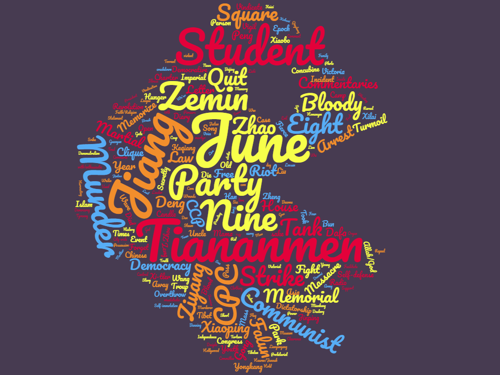
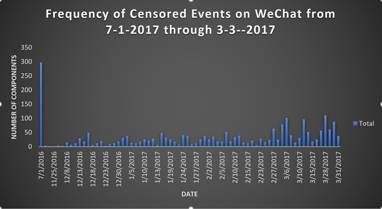
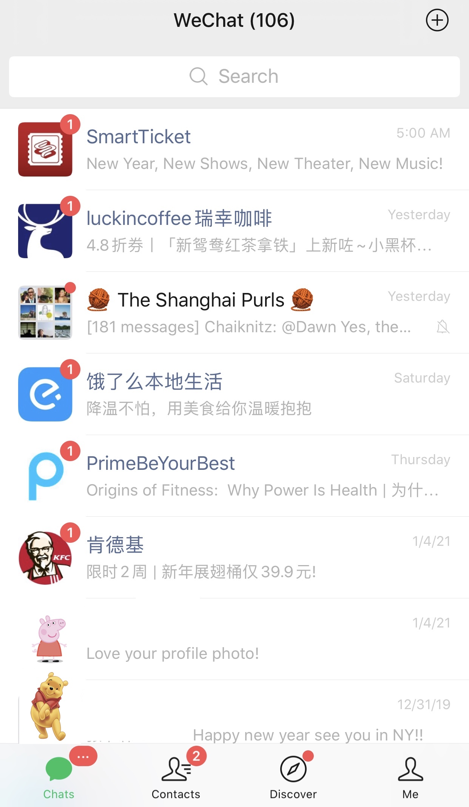
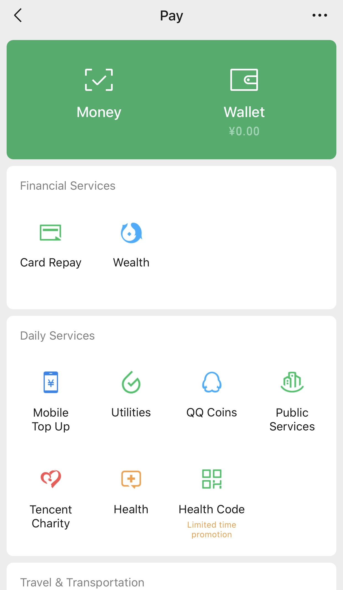
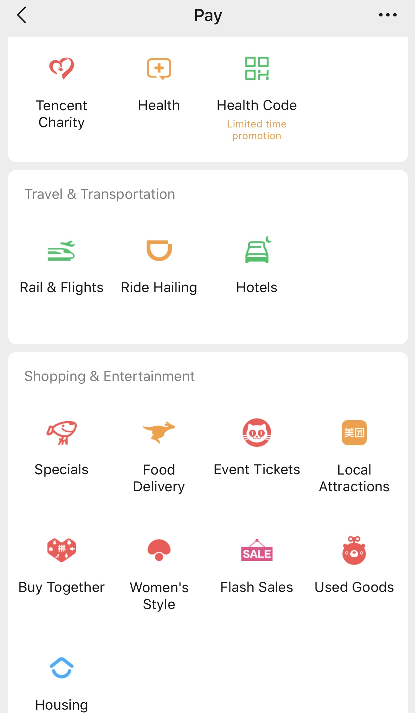

China Censorship Project (CCP)

Welcome to our project on Internet censorship in China. Our goal is to provide experts and novices alike with a better understanding of online censorship in the People's Republic of China by examining data on censored terms on WeChat. Our analysis relies on the keywords compiled by the Citizen Lab based in Toronto.
The Citizen Lab is an interdisciplinary laboratory based at the Munk School of Global Affairs & Public Policy, University of Toronto. More information can be found at their website.
Word Cloud for July 2016
This image shows the words censored throughout the month of July 2016. The size of the words conveys the number of times the word was included in a banned phrase or set of keywords. For example, "Tiananmen" appeared in "Tiananmen June 4," "Tiananmen Tank," "Tiananmen Murder," "Tiananmen Mother," "Tiananmen Turmoil," and more. Please note most of the words were censored in Mandarin Chinese and have been translated to English. Furthermore, The time period refers to when the censored words were discovered, not necessarily the time when they were originally censored by the government. The keywords were pulled from this dataset of censored keywords on WeChat
Censorship in China
It is common knowledge that China’s "Great Firewall" blocks many Western companies from reaching users in Mainland China. For example, The New York Times, BBC, The Washington Post, Google, Facebook, Twitter, Snapchat, and Instagram are all inaccessible from within Mainland China without a virtual private network (VPN), which are also illegal in Mainland China. However, many people outside of China are unaware that Chinese internet and social media apps are also subject to intensive government oversight. On social media platforms, the Chinese government censors sensitive key words, phrases, and images sent by users through the app.
While keywords, phrases, images, and urls are censored across all platforms in mainland China, this project focuses on the censorship data from the WeChat that is compiled through the Citizen Lab's research. The Citizen Lab tested some known censored topics by sending a sensitive message from a Canada based WeChat account to a Mainland China based account. They found that messages containing sensitive topics sent from one account were not received by the other account (see images below). The full report on this test can be found here.


Data Analysis
Censored Keywords by Month July 2016-March 2017
Graphic 1. The histogram shows the number of keywords censored in each given month. The high number of censored words for July 2016 may be due to the fact that the Citizen Lab's project began in July 2016, and so the first month reflects an accumulation of known banned topics rather than new censored words. The dataset can be found here.
Censored Keywords by Categories
This tree chart displays the censored keywords as part of categories and subcategories. In this way, we can see that censored keywords are often part of a larger strategy in censorship rather than an isolated incident. For example, the keywords "Cultural Revolution + Spirits Are Free + Xie Yang Myself Innocent" are censored. These words refer to the imprisonment of Xie Yang, a human rights lawyer, who was arrested as part of the Chinese government's crackdown on rights lawyers and advocates beginning in July 2015, known as the 709 crackdown. Jiang Tianyong and Gao Zhisheng, both human rights laqwyers, were arrested and imprisoned as part of the same crackdown. The chart does not reflect all keywords in the dataset. With more accumulation of censored keywords, additional trends and categories could be identified. The dataset can be found here.
WeChat Overview
Outside of China, people rely on a combination of Facebook, Instagram, Snapchat, Twitter, and Whatsapp to stay in touch with friends and family and use apps like Uber, Lyft, Uber Eats, Venmo, Cashapp for other services. WeChat users can message each other, get news updates, order takeout, send money, order a taxi, or pay in store all in the WeChat app. The app is ubiquitous throughout Mainland China and is the primary way people communicate.
  
The Chat function operates the same as Facebook Messenger, iMessage, and WhatsApp; users are able to send messages, images, and files to other users on the platofrm. Users can also upload pictures to their "Moments" as non-Chinese upload pictures to their Instagram or Facebook "Story." From WeChat Pay, users can order food through mobile delivery, pay their phone bill, book a hotel, order a cab, and more. Users are able to deposit money into their Wallet on WeChat directly from their bank accounts. WeChat Pay is accepted as a form of payment by virtually every vendor in Mainland China. To pay, users need only have their QR code scanned by the vendor.
WeChat in the Media
- WeChat was most recently at the forefront of global media due to the Trump administration's attempts to ban the app from operating in the U.S. The administration cited privacy concerns and surveillance of users as the reason behind the ban. The ban also applied to TikTok, a mobile app owned by the Chinese company ByteDance. Read more here.
- WeChat and other Chinese apps were banned from operating in India in July 2020. The Indian government stated that the Chinese mobile apps threatened India's soveriegnty and national security. Anti-China sentiments in India were high this summer following another clash between Indian and Chinese troops in a disputed border area in the Himalayas. Read more here.
- WeChat is being accused of taking the Chinese government's disinformation campaigns global. Both WeChat and Tiktok are believed to be supressing certain content, like pro Hong Kong democracy or LGBTQ content. Read more here.
- In the midst of the global coronavirus pandemic, WeChat is censoring messages containing certain keywords related to the coronavirus pandemic. These findings also rely on data collected by the Citizen Lab. Read more here.
Further Reading
- The Council on Foreign Relations provides a detailed overview of how censorship affects the Chinese media landscape as a whole. The article can be found here.
- Foreign Policy offers updates on censorship in print media. Links within the article provide additional information on topics like censorship in academia. The article can be found here.
- The Guardian shows how China's state run media propaganda is permeating beyond China's borders to influence foreign media. The article can be found here.
- Jessica Chen Weiss of Cornell University has done extensive research on the role of protests in China's authoritarian regime. Her work shows the intersection between the Chinese government's various methods of maintaining control over the country. Her books and articles can be found here.